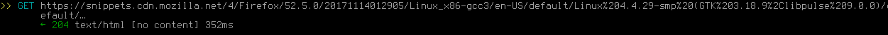

Mozilla Firefox
Mozilla Firefox є одним із найпопулярніших і найдовше існуючих браузерів. Його розробники заробили йому репутацію «браузера, що базується на конфіденційності та безпеці, поважаючи користувача» — але чи це виправдано, чи це просто маркетинг? Фактично, протягом багатьох років вони прийняли кілька рішень проти конфіденційності (і загалом проти користувачів), але ця стаття буде зосереджена виключно на шпигунстві. Перевірена версія: 52.5.0, із налаштуваннями за замовчуванням. Програма, що використовується для тестування запитів: Mitmproxy.
Рівень шпигунського ПЗ: високий
Після виконання посібника з пом'якшення це програмне забезпечення не є шпигунським .
Він дуже часто надсилає багато різних даних (деякі з яких можуть однозначно ідентифікувати вас). Усі «послуги», які він надає, такі як пошукові системи за замовчуванням і Pocket, порушують конфіденційність. Рейтинг не вищий, тому що принаймні ви можете вимкнути або змінити більшу частину цього, хоча це часто вимагає глибокого занурення в about:config.
Телефоную додому
Щоразу, коли ви запускаєте Firefox, він робить такий запит:

Фактично, це робиться кожного разу, коли ви заходите на веб-сайт, і навіть кілька разів поспіль для одного веб-сайту. Тож Firefox весь час «телефонує додому» без вашого відома. Можна вимкнути ТІЛЬКИ в about:config . Але оскільки ви вже запустили Firefox, він зробить цей запит принаймні один раз.
Автоматичне підключення до деяких веб-сайтів, які ви відвідали, включно з їхніми трекерами
Веб-сайти, які ви відвідуєте найчастіше, додаються на панель нової вкладки. Коли ви потім відкриваєте нову вкладку, Firefox інколи надсилає запити до веб-сайтів у ній, включаючи деякі з їхніх трекерів. Я ще не визначив, як це працює. Іноді він взагалі не виконує запити; іноді ви отримуєте сотні зображень, сценаріїв, трекерів тощо, які завантажуються просто тому, що ви відкрили нову вкладку (без відвідування жодного веб-сайту явно). НЕ вдалося знайти спосіб вимкнути це , навіть у about:config.
Firefox відстежує користувачів за допомогою Google Analytics
Firefox інтегровано з платформою шпигунського програмного забезпечення під назвою «Google Analytics» [1] . Було підтверджено, що Firefox тепер надсилає аналітику в Google. За словами розробника Firefox, шпигунське програмне забезпечення у Firefox «надзвичайно корисне для нас, і ми вже зважили вартість/вигоду від використання відстеження». і що Firefox не буде повністю видаляти підтримку Google Analytics. Позиція Firefox щодо конфіденційності дуже чітко викладена в цій цитаті:
«Однак я хотів відповісти на вашу позицію: ми не надаємо «дані безпосередньо Google». Перегляньте обговорення тут: https://bugzilla.mozilla.org/show_bug.cgi?id=858839. Коротка версія: tl ;dr: Тепер у нас є можливість відмовитися від будь-яких дій Google із даними, які Google Analytics збирає на веб-сайтах Mozilla. Відстеження GA є анонімним і на сукупному рівні, і ми використовуємо його для покращення взаємодії з нашими веб-сайтами. Ми збір сукупних і неідентифікованих даних у цифрах, щоб гарантувати, що наші зміни в розробці/UX добре відповідають. Ми можемо поважати конфіденційність і все ще мати аналітику; насправді мета Mozilla полягає в тому, щоб досвід, який цінує конфіденційність користувачів і зручність (я б сказав, що Apple також хоче, наприклад, UX, який відповідає цій формі). Для цього нам потрібні деякі анонімні та зведені дані".
Найкращий висновок із цього полягає в тому, що Mozilla хоче зробити вигляд, що включення шпигунського ПЗ у їхню програму якимось чином не є порушенням конфіденційності, і що Firefox, можливо, поважає конфіденційність користувачів, одночасно збираючи дані про користувачів і надсилаючи їх Google. Наполегливо рекомендуємо прочитати тему GitHub і подальші заяви щодо конфіденційності, зроблені співробітником Mozilla, захищаючи функції шпигунського програмного забезпечення у Firefox. Дуже небезпечно стверджувати, що існує якась золота середина між повагою до конфіденційності користувача та атакою користувача.
«Безпечний» перегляд?
Він нібито використовується для захисту від «фішингових» веб-сайтів, але зрештою кожні 30 хвилин він надсилає низку запитів до Google (згідно з Mozilla), включаючи запит POST із вашою версією Firefox і унікальним, постійним, прихованим файлом cookie. Оскільки щоразу, коли поточна URL-адреса збігається із записом у кешованому локальному чорному списку, до серверів Google надсилається запит, нібито щоб перевірити, чи цей веб-сайт усе ще знаходиться в головному чорному списку онлайн, це дозволяє Google відстежувати конкретні веб-сайти прозоро для користувача, розміщуючи URL-адреси інтересу в локальному, але не в чорному списку онлайн. Можна вимкнути ТІЛЬКИ в about:config .

Звіт про стан Firefox
З вуст коня: «Наприклад, FHR надсилає дані до Mozilla про такі речі, як: операційна система, ПК/Mac, кількість процесорів, версія Firefox, кількість і тип доповнень. Дані, зібрані FHR, пов’язані з Ідентифікатор документа, який відповідає інсталяції веб-переглядача (пояснено вище в питанні №4), щоб дані можна було співвіднести протягом обмеженого періоду часу». [2] Крім того, згідно з Mozilla, нові версії Firefox також збиратимуть телеметричні дані за замовчуванням. Можна вимкнути через GUI.
Пошукові системи проти конфіденційності за замовчуванням
Старі версії Firefox використовували Google як пошукову систему за умовчанням, що, очевидно, суперечить конфіденційності. Наприклад, з їхньої політики конфіденційності: «Коли ви користуєтеся нашими послугами або переглядаєте вміст, наданий Google, ми автоматично збираємо та зберігаємо певну інформацію в журналах сервера. Це включає: деталі того, як ви використовували наш сервіс, наприклад ваші пошукові запити». . Тоді це був Yahoo, який не кращий: «Інструмент історії пошуку Yahoo дозволяє вам побачити, що ви шукали в минулому». Тому всі ваші пошуки зберігаються. І видалення нічого не дає: «Навіть якщо ви очистите свої попередні пошуки або вимкнете інструмент «Історія пошуку», Yahoo все одно збирає та зберігає дані журналу пошуку користувачів, коли ви використовуєте технологію Yahoo Search». Firefox 57 знову повертається до Google. Якби вони справді дбали про вашу конфіденційність,Можна змінити через GUI.
Кишеня — кошмар конфіденційності
На навігаційній панелі Firefox є кнопка Pocket, яка дозволяє «зберігати будь-яку статтю, відео чи сторінку з Firefox» і «Переглядати в Pocket на будь-якому пристрої в будь-який час». Давайте подивимося, як це виглядає з точки зору конфіденційності — цитування з політики конфіденційності Pocket [3]: «На додаток до інформації, яку ви надаєте нам під час реєстрації облікового запису користувача, ми збираємо інформацію про URL-адреси, заголовки та вміст веб-сторінок, а також іншу інформацію, яку ви зберігаєте в Pocket». Таким чином, все, що ви зручно поклали у «ваш» Pocket, зберігається (звичайно, інакше Pocket не працював би). «Типи інформації, яку ми збираємо, включають тип вашого браузера, тип пристрою, ідентифікатор пристрою, часовий пояс, мову та іншу інформацію, пов’язану зі способом доступу до Pocket Technologies». Тож щоразу, коли ви переглядаєте файл у «своєму» Pocket , вони знають усе про пристрій, яким ви це робили. «Ми також можемо використовувати «піксельні теги», «веб-маяки», «чисті GIF-файли» або подібні засоби (окремо або разом «піксельні теги» ) у зв’язку з електронними листами, які ми надсилаємо нашим користувачам для збору даних про використання." Таким чином, вони діють як будь-який старий веб-сайт відстеження, навіть у спосіб, який не має нічого спільного з їх функціональністю. "Ми також можемо надати ідентифікатор вашого пристрою з третіми сторонами у зв'язку з рекламними кампаніями. " І вони також працюють з рекламодавцями! Опис усіх порушень Pocket зайняв би всю статтю. Існують подібні служби з кращою політикою конфіденційності, але зрештою вони все одно зберігають те, що ви переглядаєте, у "хмарі". Справжня конфіденційність веб-переглядач не буде інтегрований з ними за замовчуванням. Ми також можемо надати ідентифікатор вашого пристрою третім особам у зв’язку з рекламними кампаніями. " І вони також працюють з рекламодавцями! Опис усіх порушень Pocket зайняв би всю статтю. Існують подібні служби з кращою політикою конфіденційності, але зрештою вони все одно зберігають те, що ви переглядаєте, у "хмарі". Справжня конфіденційність веб-переглядач не буде інтегрований з ними за замовчуванням. Ми також можемо надати ідентифікатор вашого пристрою третім особам у зв’язку з рекламними кампаніями. " І вони також працюють з рекламодавцями! Опис усіх порушень Pocket зайняв би всю статтю. Існують подібні служби з кращою політикою конфіденційності, але зрештою вони все одно зберігають те, що ви переглядаєте, у "хмарі". Справжня конфіденційність веб-переглядач не буде інтегрований з ними за замовчуванням. Можна вимкнути в about:config [8]
Автоматичні оновлення
Гадаю, не так вже й погано порівняно з усіма переліченими вище — але все одно встановлює щось без вашої згоди, з можливими новими кошмарами конфіденційності. Немає жодних виправдань принаймні не робити «Перевірити наявність оновлень, але дозволити мені вибрати, чи встановлювати їх» за умовчанням — це все одно забезпечить перевагу безпеки, але не позбавить користувача контролю. Можна вимкнути через GUI.
Інші питання
Firefox також іноді робить запит на «self-repair.mozilla.org», який виглядає так:

Він містить "optimizelyEndUserID", що, ймовірно, означає, що він унікально ідентифікує вас. Можна вимкнути ТІЛЬКИ в about:config. [7]
Він також робить цей запит кожного разу, коли ви відкриваєте домашню сторінку за умовчанням:
Номер після версії Firefox є, знову ж таки, унікальним ідентифікатором [4] Можна вимкнути ТІЛЬКИ в about:config.
У Firefox є файл зі списком заблокованих доповнень, які він вважає «шкідливими», і щодня надсилає запит на його оновлення (навіть якщо у вас не встановлено жодних доповнень).

Запит містить унікальний ідентифікатор інсталяції браузера. Можна вимкнути ТІЛЬКИ в about:config.
Firefox повідомляє майже про кожну вашу взаємодію з його інтерфейсом користувача
Firefox надсилатиме інформацію майже про кожну базову операцію, яку ви виконуєте, до Mozilla. Це позначено унікальним ідентифікатором клієнта та ідентифікатором вашого поточного сеансу, а також будь-якою відповідною інформацією, пов’язаною з цією дією. За замовчуванням у Mozilla [5] повідомляється про наступне використання інтерфейсу користувача :
- Виконання пошуку
- Натискання на найпопулярніший елемент сайту
- Видалення елемента з історії
- Блокування сайту
- Додавання посилання в закладки
- Видалення закладки з посилання
- Відкриття посилання в новому вікні
- Відкриття посилання в новому приватному вікні
- Відкриття панелі налаштувань нової вкладки
- Закриття панелі налаштувань нової вкладки
- Визнаючи застереження щодо розділу
- Додавання або редагування нового TopSite
- Запит на попередній перегляд знімка екрана
- Кінець сеансу
- Статистика показів
- Клацніть/заблокуйте/збережіть_в_кишені пінг
- Помилка ініціалізації аддона
- Розрахунок спорідненості домену
По суті, хоча ця функція не передає вашу історію пошуку в Mozilla, вона демонструє неймовірно детальний опис того, як саме ви використовуєте інтерфейс користувача Firefox. Це можна вимкнути, і це функція відключення шпигунського програмного забезпечення. Ви можете вимкнути його через графічний інтерфейс користувача, як описано тут: Обмін даними з Mozilla, щоб допомогти покращити Firefox [web.archive.org] [archive.fo] [ghostarchive.org]
Трекери білого списку
Mozilla має функцію під назвою «Покращений захист від відстеження». Заявлена мета цієї функції — захистити користувача від стеження. Було б чудово, якби Mozilla не вносила в білий список величезний список доменів [9] .
Захист від шпигунського програмного забезпечення Firefox
Цей огляд також супроводжується сторінкою про те, як налаштувати Firefox для більшої конфіденційності, а також посиланнями на інші проекти, створені для вирішення цієї проблеми. Ви можете прочитати про це тут. Ось деякі з прапорців у about:config, згаданих раніше в статті, а також значення, які вони також повинні встановити:
| Функція шпигунського ПЗ | about: прапор конфігурації | значення about:config | Джерело |
|---|---|---|---|
| Телефоную додому | network.captive-portal-service.enabled | помилковий | Вимкнути адаптивний портал [archive.li] [web.archive.org] |
| Самостійний ремонт | browser.selfsupport.url | "" | Як я можу припинити постійне підключення firefox до self-repair.mozillia.org [archive.is] [ghostarchive.org] |
| Кишеньковий | pocket.enabled | помилковий | Вимкнути Pocket у Firefox [archive.is] [ghostarchive.org] |